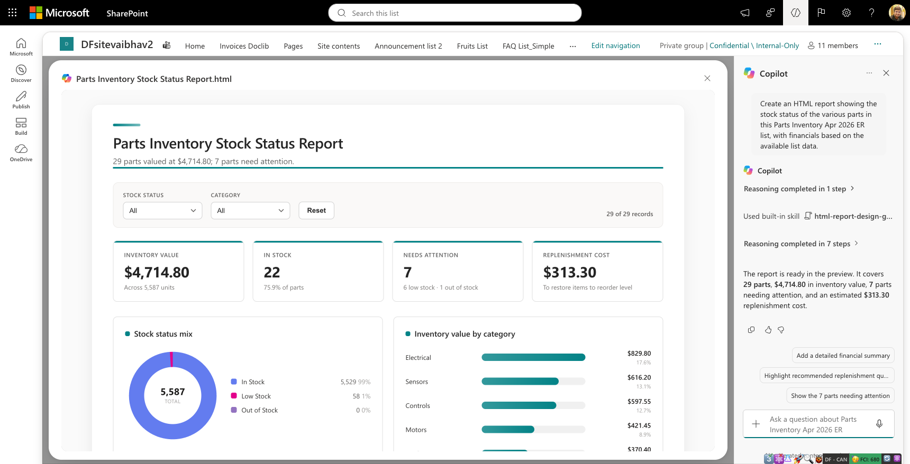
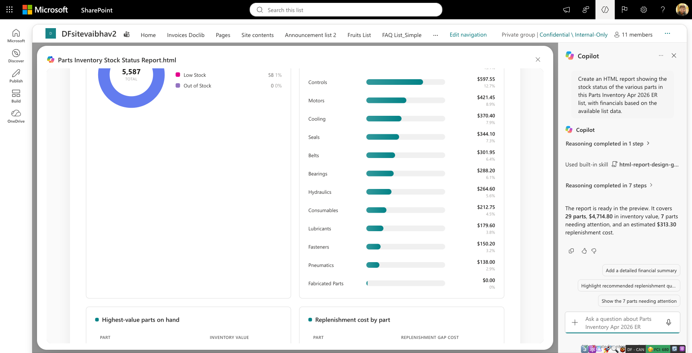
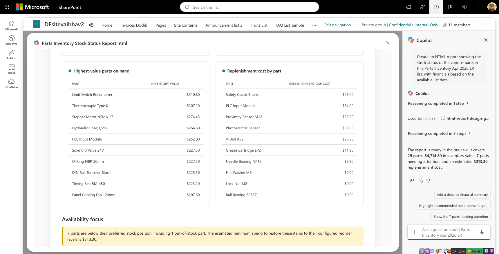
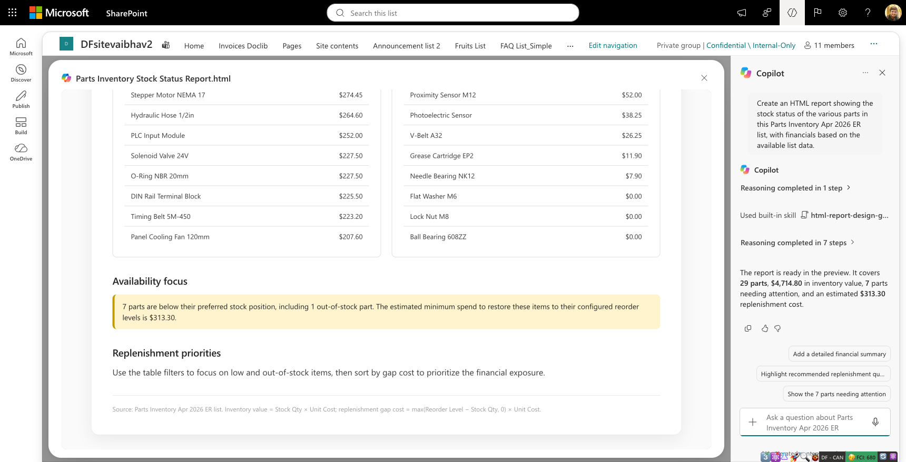
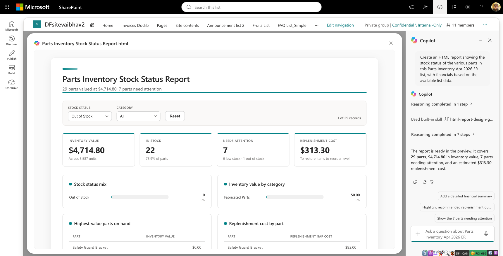
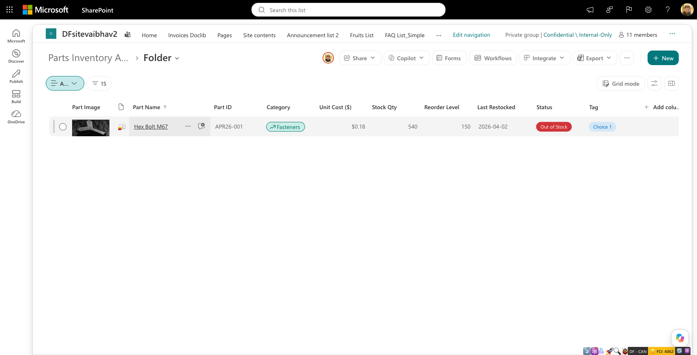

PI-03 / FAIL
Undisclosed folder exclusion
The source label names the list and the counter says 29 of 29 records, without explaining that the folder's part is excluded.
SharePoint Lists / Assertion-generation pilot
Twelve assertions generated from the user's task and observed source fields, frozen before one Copilot submission. No supplied assertion set or V2.2 defaults.
Not an overall quality rating. Both failures share a folder-omission root cause. Quantity accuracy passes on embedded data, not visible field coverage. The assertion set itself has gaps. No UNABLE or N/A verdicts.
$4,714.80
5,587 units / 7 status exceptions
$4,812.00
6,127 units / 8 stored-status exceptions
The omitted Hex Bolt M67 (APR26-001) contributes 540 units and $97.20. It is stored as Out of Stock despite its positive quantity. The report excludes it without a folder-scope note.

PI-03 / FAIL
The source label names the list and the counter says 29 of 29 records, without explaining that the folder's part is excluded.
PI-07 / FAIL
Six low-stock parts and one out-of-stock part appear. The observed source contains two stored out-of-stock records. The source inconsistency was preserved by the evaluator.
All included row values match the source. The $313.30 reorder-level top-up estimate and displayed monetary calculations reconcile to the stated formula.
Useful but incomplete. The set detected a real scope failure and tested source-backed financial accuracy. It did not fully specify a usable visible stock ledger or consistent filter behavior.
These observations are outside the frozen score. No assertions were added or rewritten after seeing the response. They inform a future criteria version, not retrospective rescoring.
Prompt 01 / Assertions v1
10 PASS / 2 FAIL / 0 UNABLE / 0 N/A. Provisional score 83.3% (10/12); judgment coverage 100% (12/12). Source coverage is not judgment coverage.
Create an HTML report showing the stock status of the various parts in this Parts Inventory Apr 2026 ER list, with financials based on the available list data.
lets do another pilot....this time, I will only provide a list....this is your test for good assertion generation....the task id to create a HTML report using this List https://microsoft.sharepoint-df.com/teams/DFsitevaibhav2/Lists/Parts%20Inventory%20Apr%202026%20ER/AllItems.aspx ....you have to click on copilot icon on bottom right, ask it to create a report to get the status stocks of various parts in this List, which financials
Financials means inventory value using Stock Qty and Unit Cost ($). Replenishment estimates are optional and must state their basis. No revenue, profit, demand forecast or supplier pricing is required or inferred.
The report is ready in the preview. It covers 29 parts, $4,714.80 in inventory value, 7 parts needing attention, and an estimated $313.30 replenishment cost.
Copilot also displayed the built-in skill label html-report-design-guideline. Hidden reasoning was not used for judging.
| Assertion | Verdict | Reason and evidence |
|---|---|---|
| PI-01 The response provides an accessible HTML stock report artifact or complete HTML source that can be saved as a report. Frozen evidence ruleOpen the returned artifact using normal UI or inspect complete HTML source; a promise, inaccessible link or chat-only summary is insufficient. | PASS | An HTML file named Parts Inventory Stock Status Report.html opened in the SharePoint Content preview and rendered an interactive report. |
| PI-02 The report explicitly identifies the source list as Parts Inventory Apr 2026 ER. Frozen evidence ruleReport title, source label or source link; unrelated source fails. | PASS | The report footer explicitly identifies Parts Inventory Apr 2026 ER list as its source. |
| PI-03 The report accurately states the scope of records covered, including any folder or subset exclusions. Frozen evidence ruleCompare report coverage with inspected root and folder records. Claiming complete coverage while omitting records fails; inaccessible source scope makes this UNABLE. | FAIL | The report says 29 of 29 records and names the list without explaining a root-only scope. The inspected folder contains APR26-001, omitted from the model. Thirty observed source parts total $4,812.00, compared with the report's $4,714.80 for 29 root parts. Difference: $97.20 and 540 units. |
| PI-04 Each reported part is unambiguously identifiable by its source Part Name or Part ID. Frozen evidence ruleCompare report rows against source identifiers; aggregated charts alone do not establish part-level reporting. | PASS | The displayed part names match unique source identities. The embedded 29-row model also preserves Part IDs. This does not imply that all parts appear simultaneously in the top-ten tables. |
| PI-05 Each reported stock quantity matches the corresponding source Stock Qty. Frozen evidence ruleCompare all reported quantities with source rows, preserving zero; unsupported rows UNABLE rather than inferred. | PASS | All 29 embedded stockQty values match the corresponding source rows, including Safety Guard Bracket at zero; their sum matches 5,587 displayed units. IMPORTANT: per-part stock quantities are not displayed in the report's tables. This is a data-accuracy pass, not a visible-quantity-coverage pass; the frozen assertion lacks an explicit presence requirement. |
| PI-06 Each reported stock status preserves the source Status or is explicitly labelled as a derived classification with a consistently applied rule. Frozen evidence ruleCheck In Stock, Low Stock and Out of Stock against source, including zero stock and equality with reorder level. | PASS | All 29 included status values match the source. Low Stock and Out of Stock filters expose the matching included parts; DC Gear Motor 12V at quantity 5 and reorder level 5 remains In Stock. The omitted folder part is judged under coverage checks, not treated as an included status mismatch. |
| PI-07 The report includes every source part marked Low Stock or Out of Stock within its declared scope. Frozen evidence ruleCompare the source exception set with report entries; a missing exception fails. Unverified source scope makes completeness UNABLE. | FAIL | The list-scoped report omits Hex Bolt M67 (APR26-001), whose stored source status is Out of Stock, and gives no folder exclusion. It includes six low-stock parts and Safety Guard Bracket but only seven of eight observed source status exceptions. The source inconsistency (540 units yet Out of Stock) was preserved, not silently corrected. This shares the folder-omission root cause with PI-03. |
| PI-08 The report provides a stock-value financial summary derived from Stock Qty multiplied by Unit Cost ($). Frozen evidence ruleReport shows inventory value and identifies its calculation basis; do not require revenue or profit fields absent from the list. | PASS | Inventory-value summary and category breakdown are present. Footer states Inventory value = Stock Qty x Unit Cost. |
| PI-09 Every reported monetary calculation reconciles with the source values and its stated formula to the displayed currency precision. Frozen evidence ruleIndependently calculate line values, totals, category values and any optional replenishment estimates; tolerance half of the final displayed unit. UNABLE if relevant source values unavailable; N/A only if no monetary calculations are reported, with PI-08 judged separately. | PASS | All 29 embedded line values and reorder-gap costs match integer-cent calculations. Included-record total $4,714.80, fourteen category values, both displayed monetary tables and estimated reorder-level top-up $313.30 reconcile. This checks arithmetic for included records; the incorrect implied whole-list coverage is separately failed under PI-03. |
| PI-10 Monetary figures have a clear currency label consistent with the source's dollar-denominated Unit Cost ($) field. Frozen evidence ruleDollar symbol or an explicit applicable table/section currency label; a specific national currency must have source support. N/A only when no monetary figures appear. | PASS | Displayed monetary values carry the dollar symbol, consistent with Unit Cost ($). No national currency code is visibly claimed. The internal formatter uses USD, which is not independently established by source metadata; this is a limitation, not a visible currency-label failure. |
| PI-11 Financial claims that cannot be established from the list are explicitly identified as assumptions or unavailable information. Frozen evidence ruleUnsupported revenue, margin, forecasts, order quantities or prices must not be stated as verified facts. N/A if no such claims are made. | PASS | Replenishment is described as an estimate to restore configured reorder levels, with explicit max(Reorder Level - Stock Qty, 0) x Unit Cost formula. No verified revenue, margin, forecast or supplier quote is claimed. The estimate is not a purchase recommendation based on demand or lead time. |
| PI-12 The generated HTML report's part names, stock values and financial values are readable without overlapping or inaccessible clipping at the execution viewport. Frozen evidence ruleInspect rendered report screenshots and normal scrolling. Ordinary usable horizontal scrolling is permitted. UNABLE if the generated artifact cannot be opened; do not judge our evaluation-report UI instead. | PASS | At the observed 1720 x 878 viewport, shown part names, totals and monetary table cells are readable without overlap or inaccessible clipping. Normal wheel scrolling exposed the full preview. This does not certify mobile, accessibility compliance or missing fields. |
No assertions have this verdict.
Thirty observed parts: 29 at root and one in Folder. UI transcription, not an API export or guaranteed backend count. The initial intake completeness gap was narrowed through folder inspection; national currency and backend completeness remain unresolved.
Separate full-window captures, never stitched. Preview moved with normal wheel gestures only. The overlay obscures much of the list; source snapshots and the folder screenshot provide separate source evidence.





{kind=link}
{kind=link}
{kind=link}
{kind=link}